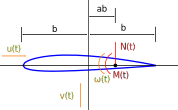

Peters' Finite State Model

Type Definition
Aeroelasticity.Peters — TypePeters{N,TF,TV<:SVector{N,TF},TA<:SMatrix{N,N,TF}}Two-dimensional aerodynamic model based on Peters' finite state model with N state variables, inputs $u, \omega, \dot{v}, \dot{\omega}$ and parameters $a, b, a_0, \alpha_0, c_{d,0}, c_{m,0}$
Constructors
Aeroelasticity.Peters — MethodPeters{N, TF=Float64}()Initialize a model with type Peters with N state variables
Theory
For Peter's finite state model, an additional term is added to the expression for the effective angle of attack from the quasi-steady model to account for induced velocity.
\[\alpha_\text{eff} = \frac{v}{u} + \frac{b}{u}\left( \frac{1}{2} - a \right) \omega + \frac{\lambda_0}{u} - \alpha_0\]
The induced velocity $\lambda_0$ is approximated from a set of N induced-flow states $\lambda_1, \lambda_2, \dots, \lambda_N$ as
\[\lambda_0 \approx \frac{1}{2} \sum_{n=1}^N b_n \lambda_n\]
The set of N first-order ordinary differential equations which govern the N finite aerodynamic states are derived by Peters et al. as
\[\bar{A} \lambda + \frac{u}{b} \lambda = \bar{c} \left[ -\dot{v} + u\omega + b \left(\frac{1}{2} - a \right) \dot{\omega} \right]\]
where
\[\bar{A} = \bar{D} + \bar{d} \bar{b}^T + \bar{c} \bar{d}^T + \frac{1}{2} \bar{c} \bar{b}^T \\ \bar{D}_{nm} = \begin{cases} \frac{1}{2n} & n=m+1 \\ \frac{-1}{2n} & n=m-1 \\ 0 & n \neq m \pm 1 \\ \end{cases} \quad \bar{b}_n = \begin{cases} \left( -1 \right)^{n-1} \frac{(N+n-1)!}{(N-n-1)!}\frac{1}{\left(n!\right)^2} & n \neq N \\ \left( -1 \right)^{n-1} & n = N \end{cases} \quad \bar{c}_n = \frac{2}{n} \quad \bar{d}_n = \begin{cases} \frac{1}{2} & n = 1 \\ 0 & n \neq 1 \end{cases}\]
The same force and moment expressions are used as in the quasi-steady model, but with the new effective angle of attack provided above.
Note that while Peter's finite state model can accommodate any number of aerodynamic state variables, generally 3-10 state variables are used.
Compressibility Correction
A compressibility correction may be applied to the results of this model in order to extend their applicability. Applying a Prandtl-Glauert compressibility correction, the normal force, axial force, and pitching moment become
\[\mathcal{N}_\text{compressible} = \frac{\mathcal{N}}{\sqrt{1 - M^2}} \\ \mathcal{A}_\text{compressible} = \frac{\mathcal{A}}{\sqrt{1 - M^2}} \\ \mathcal{M}_\text{compressible} = \frac{\mathcal{M}}{\sqrt{1 - M^2}}\]
where $M$ is the Mach number, defined as $\frac{u}{c}$ where $c$ is the air speed of sound.
Viscous Forces
After the Prandtl-Glauert compressibility correction has been applied, an extra force in the axial direction $\mathcal{F}_v$ may be added to account for viscous forces. The magnitude of this force is scaled using the $c_{d_0}$ coefficient.
\[\mathcal{F}_v = ρ b u^2 c_{d_0}\]